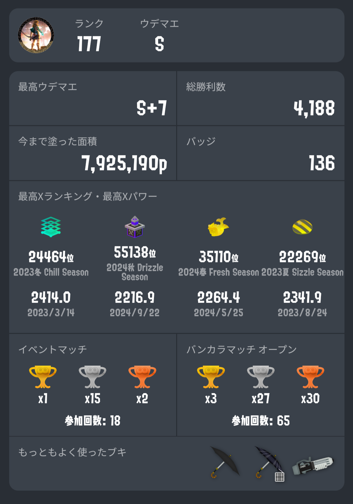
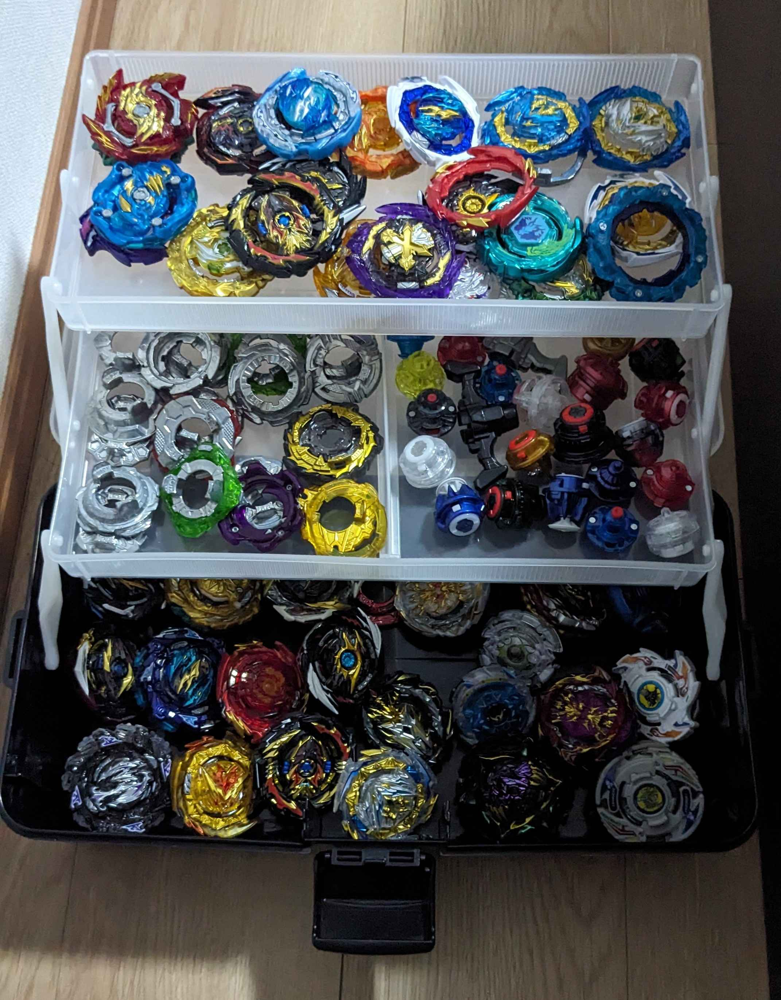
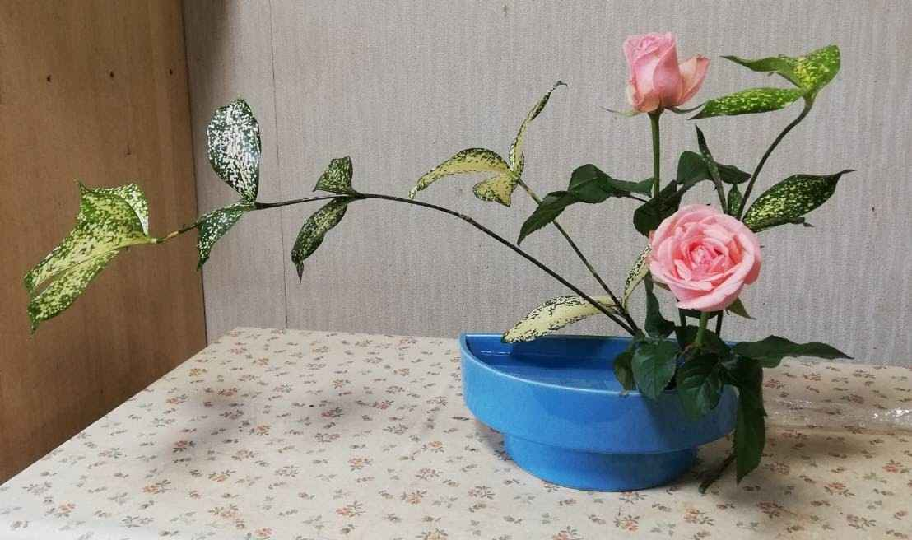

シンシマ's Portfolio
大阪出身の高専4年生のシンシマです。
好きなもの
- 対戦ゲーム
（一番多いのはスプラトゥーン3） - ソシャゲ
- オープンワールドゲーム
(主にゼルダの伝説シリーズ)
スプラトゥーン3での戦績

趣味- マルチプレイホラーゲーム
- キャンプ
- ベイブレードバースト
- スプラトゥーンアミーボコレクター
- 旅行
持ってるベイブレードたち
小中学生の時に買ったものは売ってしまったのでこれくらいしかないです。

ヨロシクオネガイシマス!!
成果物
成果物1つ目は木星の加工写真です。
ソフィア堺という場所で家一軒買えるほどの値段がする天体望遠鏡を使って、撮影した木星の写真を「Registax6」というソフトで編集した。
左がの画像で右が編集後の画像です。
編集前

編集後

成果物2つ目はベイブレードバーストBUシリーズ自作レイヤーです。
小学生の頃に3Dプリンターを使って自作のベイブレードを作った動画を見て、自分もいつか作りたいと思い続けて高専4年生の時から製作を始めた。
製作したベイブレードのレイヤーは初期型から少し改良を重ねたけど、そこから進展してない。
モデルはカオスというベイブレードです。本来は白色にしたかったが所持しているフィラメントが赤色しかなかった。
写真内の左のものは市販品で右のものは赤い部分だけ自作でそれ以外は市販品です。


基礎研究
プロジェクトの位置づけ:寿司をどのように提供するか
取り組み期間:約8ヶ月間
チーム人数:6人
役割・担当:リーダー
成果物:Googleサイトを使用して製作した高専祭の観光客用のサイト
製作したサイトはQRコードにしてポスターに添付することで、班としての成果物の説明を途中から聞いてもついていけるようにした。

シンシマが持ってるスキルたち
授業やクラブ活動、文化祭活動、趣味を含めて利用経験のあるハードウェアやソフトウェアのスキルたちです。
それぞれのスキルは4段階で評価する。
1段階(1)は授業や部活で使ったがほぼ使いこなせない状態
2段階(2)は授業や部活以外でも使いある程度使える状態
3段階(3)はそこそこ使える状態
4段階(4)はほぼ完璧に使える状態
使ったことある機械
- 卓上旋盤(2)
- 卓上ボール盤(3)
- フライス盤(1)
- レーザーカッター(1)
- プリンター(4)
プログラミング言語
- C言語(1)
- C++(1)
- python(1)
マイコン
- Arduino Uno(2)
- micro:bit(2)
ソフトウェアサービス
- Fusion 360(2)
- KiCad(2)
- Tinkercad(2)
- Registax6(1)
その他作品集
ここではシンシマの小原流の生け花作品を紹介していきます。実際に小原流初等科という資格を持っています。位は一番下です。
生け花を始めたのは小学5年生の時で、通い続けていたのは中学2年生です。
始めた理由はお母さんがやっていた影響から始めさせられました。
僕の生け花の作品はこちらです。

これ以外にも多くの作品を作ったんですけど、残っている写真が少なくて、かつ見栄えがよさそうな写真がこれしかありませんでした。